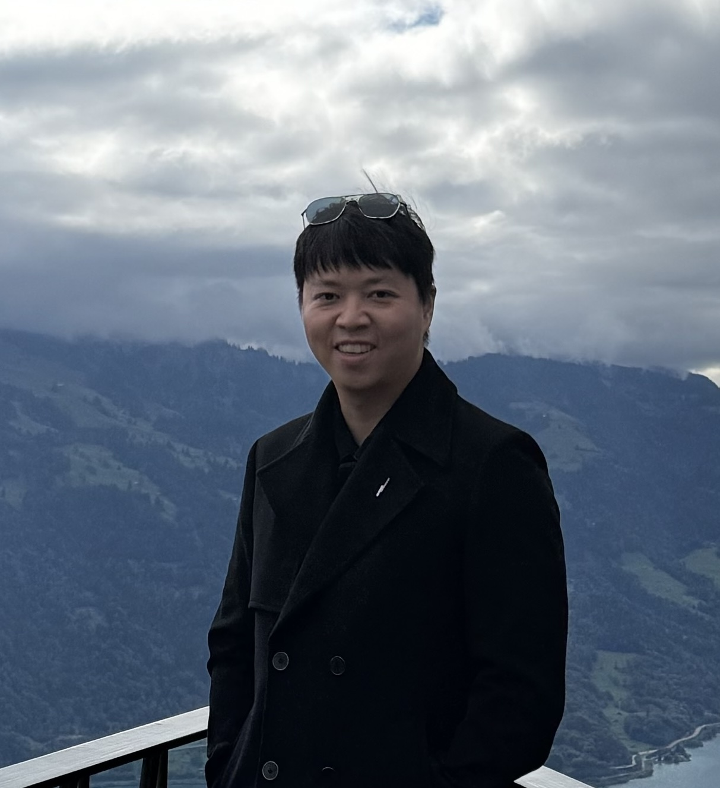

Quantum telepathy
Using quantum entanglement to coordinate decisions between parties with restricted communication.
Theory of Quantum Computing and Information
Associate Professor, Fudan University
Shanghai Institute for Mathematics and
Interdisciplinary Sciences (SIMIS)
I research the use of quantum nonlocality for coordination between multiple parties in latency-sensitive settings. I am also pursuing a bottom-up approach to quantum computing by exploring new hardware-native quantum gates.

Using quantum entanglement to coordinate decisions between parties with restricted communication.
Hardware-aware theory for quantum gates, circuit compilation, benchmarking, and computer architecture.
Quantum communication, channel capacities, feedback-assisted communication, and scrambling.
Dawei Ding, Xinyu Xu
Dawei Ding, Zhengfeng Ji, Pierre Pocreau, Mingze Xu, Xinyu Xu
Dawei Ding, Liang Jiang
Jianxin Chen, Dawei Ding, Weiyuan Gong, Cupjin Huang, Qi Ye
Mario Szegedy, Dawei Ding, Yaoyun Shi
Rui Chao, Dawei Ding, Andras Gilyen, Cupjin Huang, Mario Szegedy
Dawei Ding, Yihui Quek, Peter Shor, Mark Wilde
Jordan Cotler, Dawei Ding, Geoffrey Penington
Dawei Ding, Patrick Hayden, Michael Walter